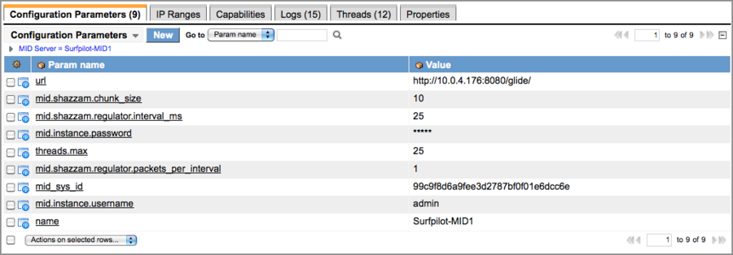

MID Server Configuration
| |
Note: This article applies to Fuji and earlier releases. For more current information, see MID Server Configuration at http://docs.servicenow.com
The ServiceNow Wiki is no longer being updated. Visit http://docs.servicenow.com for the latest product documentation. |
Contents
- 1 Overview
- 2 Available MID Server Setting Types
- 3 Required Configuration
- 4 Optional Configuration
- 4.1 Setting MID Server Memory Size
- 4.2 Setting MID Server Thread Use
- 4.3 Enabling Script File Synchronization for Windows Enhanced Security
- 4.4 Adding SSL Certificates
- 4.5 MID Server Properties
- 4.6 CIM Parameters
- 4.7 Connection Parameters
- 4.8 Credentials Parameters
- 4.9 Debug Parameters
- 4.10 DNS Parameters
- 4.11 ECC Queue Parameters
- 4.12 Logging Parameters
- 4.13 Proxy Server Parameters
- 4.14 Shazzam Parameters
- 4.15 SNMP Discovery Parameters
- 4.16 SSH Discovery Parameters
- 4.17 Upgrade Parameters
- 4.18 Windows Discovery Parameters
1 Overview
Administrators must configure a MID Server to ensure that it has access to sufficient system resources, probes the proper data sources, and communicates with the instance as expected. You must complete all the steps in MID Server Installation before attempting any of the configuration steps explained here.
You must restart a MID Server after any configuration change for the changes to take effect.
| |
Note: Using special characters in an XML configuration file requires you to encode them. |
2 Available MID Server Setting Types
You can configure the following setting types on a MID Server. The setting type determines what components are affected by the MID Server setting. Choose a MID Server setting type that matches the scope you want the setting to affect.
| Type of setting | Components affected | Overrides |
|---|---|---|
| MID Server Property | Either:
|
MID Server properties override MID Server parameters |
| MID Server parameter | The behavior of a particular MID Server | None |
2.1 Setting MID Server Properties
Use a MID Server property to control either the behavior of all MID Servers or a particular MID Server. Configure MID Server properties in the MID Server plugin. Do not configure MID Server properties in the glide.properties file that is located in the properties folder of the agent. The glide.properties file gets overwritten during the upgrade process.
- Navigate to MID Server > Properties.
- Click New.
- Fill in the fields, as appropriate (see table).
| Field | Description |
|---|---|
| Name | Enter the property name. See the Name(s) column in Required Parameters or Optional Configuration parameters for a list of parameter and property names. |
| Value | Enter the value you want the property to have. |
| MID Server | Leave this field blank to set a MID Server property that affects all MID Servers. To set a MID Server property for a particular MID Server, select the MID Server. |
2.2 Setting MID Server Parameters
Use a MID Server parameter to control the behavior of a particular MID Server. Set MID Server configuration parameters in either of the following places:
- From the Configuration Parameters related list in the MID Server record.
- From the config.xml file in the \agent directory of your MID Server installation.
| |
Note: Changes to parameters only take effect when the MID Server is started (or restarted). |
2.2.1 Setting Parameters from the ServiceNow Instance
You can view and manage MID Server configuration from the ServiceNow instance.
- Navigate to the list of MID Servers using one of the following paths:
- MID Server > Servers
- Discovery > MID Servers
- Orchestration > MID Servers (starting with Dublin)
- Runbook Automation > MID Servers (versions prior to Dublin)
- From the list of MID Servers, select a MID Server to configure.
- The Configuration Parameters related list shows all the parameters currently in the MID Server's configuration file. If there are any passwords, they are displayed in asterisks for security reasons.
- 
- To add parameters, click New, and then complete the form.
- After the form is submitted, the configuration file for that MID Server is modified to include the new parameter. Changes to existing parameters are reflected in the MID Server configuration file as well. Changes made to the MID Server configuration file do not take place immediately, but rather the next time the MID Server is restarted. The MID Server form has a related link for restarting the MID Server.
{kind=link}
| |
Note: ServiceNow prevents you from saving changes, such as modifying or deleting parameters, that would cause the MID Server to lose communications with the instance. For example, you cannot change the url parameter. Any changes to these protected properties must be made directly in the config.xml file for that MID Server. |
2.2.2 Setting Parameters from the config.xml File
MID Server configuration is controlled by an XML file called config.xml. This file is located in the \agent directory, immediately under the directory where the MID Server is installed. Edit this file directly to make any configuration changes to protected parameters. Many configuration changes, such as those that do not disrupt communication between the MID Server and the ServiceNow instance, may also be made from the instance.
The structure of the config.xml file is simply an outer parameters tag and a series of inner parameter tags. Each parameter tag has name and value attributes.
- To change the value of a parameter, edit the value attribute.
- To add a parameter, add another parameter tag with its name and value.
- To delete a parameter, delete the entire parameter tag.
The order of the parameters within the file is not important. Notice the green comment sections in the sample. Use these elements to add useful comments to the configuration file.
| |
Note: When configuring the MID Server for use with a proxy server, be sure to remove the comment tags around the proxy sections that you configure. |
{kind=link}
| |
Note: The sample file here is from FireFox. Conventional text editors, such as Notepad, Wordpad, or TextEdit, do not display colors and variable fonts. |
3 Required Configuration
All MID Servers require the following configuration settings.
3.1 Setting up MID Server User Credentials
Each MID Server must have a set of ServiceNow user credentials with the mid_server role. Any change to user credentials or roles used by the MID Server user requires a restart of the MID Server service.
3.2 Required Parameters
The following parameters are required for all MID Servers.
| |
Note: Using special characters in an XML configuration file requires you to encode them. |
| Label | Names | Description |
|---|---|---|
| Instance URL | url | Specifies the URL to the associated ServiceNow instance. Normally the URL is similar to https://instance.service-now.com, where you replace instance with the instance name. If you host your own ServiceNow instance, use the URL set by your organization.
|
| MID Server ID | mid_sys_id | Records the MID Server record's unique identifier. This parameter should be empty when you initially configure a MID Server. Do not change the value.
|
| MID Server name | name | Use this parameter to supply a name that is meaningful for you. If you do not supply this parameter, the MID Server uses the default value. A set of business rules synchronizes the name in the configuration file with the name in the MID Server record (starting with the Dublin release). The business rules ensure that changing the name in one location also changes the name in the other location.
|
| Instance user name | mid.instance.username or glide.glidesoap.username | If the ServiceNow instance has authentication enabled, as it is by default, set this parameter to define the user name the MID Server should use to log in to the instance. This user should have the mid_server role on the ServiceNow instance in order to access necessary tables and fields.
|
| Instance password | mid.instance.password or glide.glidesoap.password | If your ServiceNow instance has authentication enabled, as it is by default, set this parameter to define the password the MID Server should use to log in to the instance.
|
4 Optional Configuration
The following configuration settings are optional. While a MID Server should start with the default settings, you may want to change the default values to improve performance or follow your organization's business practices.
4.1 Setting MID Server Memory Size
In the base ServiceNow system, the MID Server memory is set to 512MB, which can be configured in the \agent\conf\wrapper.conf file in the MID Server installation directory. This setting might not be appropriate for the way your organization uses the MID Server. If you want the MID Server to work harder, allocate more resources to it. Or perhaps the MID Server is located in a small branch office with very few devices, and runs in an environment where memory allocation is shared between a print server, mail server, or web proxy server. In this situation, the MID Server memory allocation might have to be reduced.
To edit the memory allocation:
- Navigate to \ServiceNow\<MID Server name>\agent\conf and open the wrapper-override.conf file in a text editor.
For more information about this file, see Installing Multiple MID Servers on a Single System. - Locate the following lines in the file:
# OPTIONAL: Maximum Java Heap Size (in MB) # wrapper.java.maxmemory=512
- Edit the memory allocation.
- Remove the comment tag (#) from the memory allocation parameter.
- Save the file.
- Restart the MID Server service.
4.2 Setting MID Server Thread Use
By default, the MID Server uses a maximum of 25 threads. If the MID Server is running on a host containing many other programs that must compete for CPU time, fewer threads than the default of 25 might be necessary. You can set the MID Server to use as few as 5 threads without issues. If the MID Server needs more speed, and the host is powerful enough or lightly loaded with other programs, raise the thread setting. The thread limit depends on the hardware and the operating system of the host. You might have to experiment to find the optimal value for your situation. The following general observations may be useful:
- Most MID Server tasks require file handles to do their job.
- Windows: On the Windows operating system, file handles are available in a fixed quantity. If you configure too many MID Server threads on a Windows host, the MID Server can consume all the file handles before approaching maximum CPU usage. This situation appears as an Out of file handles error in the MID Server log and indicates that the MID Server is trying to use too many threads.
- Unix and Linux: UNIX and Linux hosts have a much different scheme for allocating file handles. Generally, you can increase MID Server thread use on these operating systems until the CPU of the host is overloaded. See your OS documentation for monitoring CPU usage.
- Each thread on the MID Server requires some memory. Exactly how much memory varies considerably from task to task and depends on the equipment being discovered. To increase the number of threads, you might have to increase the amount of memory that Java uses. If you configure insufficient memory, an Out of memory error appears in the MID Server log.
To edit the maximum number of threads allowed for the MID Server:
- Open the \agent\config.xml file using any text editor.
- Locate the following lines:
<!-- MID Server Threads --> <parameter name="threads.max" value="25"/>
- Edit the value. Keep in mind the cautions described above.
- Save the record.
- Restart the MID Server service.
4.3 Enabling Script File Synchronization for Windows Enhanced Security
Windows Internet Explorer enhanced security blocks downloaded files that it determines are potentially dangerous. Without script file synchronization, Internet Explorer blocks files downloaded for use by the MID Server, forcing ServiceNow administrators to unblock each file manually. File synchronization creates the files on the MID Server rather than downloading them, which does not trigger security blocking. Also, file synchronization between script records on the instance and the MID Server protects any customer updates in those records from being overwritten during a ServiceNow upgrade.
Script file synchronization is available starting with the Dublin release. If you are using an older version, see the previous version information.
4.3.1 How File Synchronization Works
Script files synchronized with the MID Server are stored on the ServiceNow instance in the MID Server Script File [ecc_agent_script_file] table (MID Server > Script Files). When the MID Server first connects to the instance, ServiceNow creates a directory called \scripts in the MID Server root. The instance then creates a parent directory in the path \scripts\<parent name> using definitions from the ecc_agent_script_file table. Finally, the instance creates the script files themselves inside the parent directory using the records from the ecc_agent_script_file table.
The record for the parent directory looks like this:
{kind=link}
The instance creates each script file in the parent directory on the MID Server using the record Name from the ecc_agent_script_file table as the file name and the Script field payload as the file contents. A script file record looks like this:
{kind=link}
4.3.2 Unblocking PowerShell Scripts Prior to the Dublin Release
| Click the plus for previous version information |
|---|
|
Enhanced security on the Windows operating systems can block PowerShell from working with Discovery and Orchestration. If PowerShell does not run with Discovery or Orchestration, unblock the MID Server archive:
If you do not unblock the archive, unblock each individual file:
Perform this procedure on each MID Server machine:
|
{kind=link}
4.4 Adding SSL Certificates
You can configure the MID Server to connect over SSL by adding the following certificates to the cacerts keystore file:
- Signing Certificate Authority (CA) certificate
- MID Server certificate
To add a certificate to a MID Server:
- Open a command prompt and navigate to the folder containing the JRE keytool. For example:
cd C:\Program Files (x86)\ServiceNow\<MidServer(s)>\agent\jre\bin - Enter the following keytool command to import a certificate into the MID Server's cacerts keystore:
keytool -import -alias <certificate alias> -file "<path to certificate>" -keystore "<path to MID Server(s)>\agent\jre\lib\security\cacerts"
For example:
keytool -import -alias MyCA -file "C:\myca.cer" -keystore "C:\Program Files (x86)\ServiceNow\MIDserver\agent\jre\lib\security\cacerts"
| |
Note: Keytool prompts for a certificate password. If the certificate is for a CA, keytool also asks whether to trust the certificate authority. |
To add a certificate to an instance, see Uploading a Certificate.
4.5 MID Server Properties
Use the following properties to control the behavior of all probes on a MID Server or all probes on all MID Servers. See Setting MID Server Properties.
| Label | Names | Description |
|---|---|---|
| Max length of a payload that a MID Server will return | mid.discovery.max_payload_size | Specifies the maximum string length of Discovery probe results that the MID Server will send to the instance. The MID Server verifies the size of the Discovery probe results before sending them to the instance. If the Discovery probe results exceed the limit, the MID Server discards them and returns a warning message. This applies only to probes where the Used by Discovery field is true. Set the value to any negative number to disable the payload limit and allow Discovery payloads of any size to be sent to the instance. For example, -1. This parameter is available starting with the Eureka release.
|
| Max length of an ECCQ payload XML that a MID Server will send to the instance | mid.eccq.max_payload_size | Specifies the maximum string length of a payload that the MID Server will send to the instance. The MID Server verifies the size of the payload before sending it to the instance. If the payload size exceeds the limit, the MID Server saves a copy of the payload to the filesystem on the MID Server host, and returns an error message that contains the location of the file.
|
4.6 CIM Parameters
This parameters determine how a MID Server conducts CIM Discovery.
| Label | Names | Description |
|---|---|---|
| Interval to wait between requests to the same CIMOM (ms) | mid.cim.request.interval | Specifies the number of milliseconds to wait between requests to the same Common Information Model Object Manager (CIMOM). This parameter is available starting with the Eureka release.
|
| The maximum amount of simultaneous connections allowed per CIMOM | mid.cim.host.connection.limit | Specifies the maximum number of simultaneous connections to each Common Information Model Object Manager (CIMOM). A value of zero disables simultaneous connections. This parameter is available starting with the Eureka release.
|
4.7 Connection Parameters
| Label | Names | Description |
|---|---|---|
| The maximum amount of standard messages to queue in memory for processing | mid.max.messages | Specifies the maximum number of messages to hold in memory for processing. The default value is computed from the threads.max parameter.
|
| Instance date format | instance.date.format | Specifies the format the instance uses for dates and times. The primary impact of setting this parameter is to allow the MID Server to correctly refresh its start and stop times on the MID Server record in ServiceNow. The format of this date/time string is identical to that used by the Java SimpleDateFormat class, documented here in the section titled Date and Time Patterns.
|
| MID Server immediate response enable | glide.mid.fast.responses | Instructs the MID Server to try sending messages to the instance as soon as they are ready. Normally the MID Server sends message to the ServiceNow instance serially (that is, one message at a time). Since many probes can be run in parallel, there can be multiple messages simultaneously transmitted to the instance. Setting this parameter to true may decrease the time between a probe's completion and its response arriving at the instance. However, the multiple simultaneous messages consume resources, decreasing the overall instance responsiveness. If there are communications problems, this parameter's value can also cause a logjam on the MID Server, as threads normally used for running probes may become consumed for sending messages. Generally, leave this parameter out of your configuration. Setting it to true is meaningful only under very special circumstances.
|
| MID Server JMX enable | mid.jmx.enabled | Enables a JMX server on the MID Server, which exposes some management information to JMX consoles. Implementing JMX requires additional configuration of the Java runtime environment. Setting this parameter to true is only recommended for those with detailed knowledge of the Java security architecture and a specific need for JMX.
|
| MID Server max transmission queue size | glide.mid.max.sender.queue.size | Places an upper limit on how large the queue is allowed to get. The MID Server starts deleting queued messages if this limit is exceeded. When the MID Server generates messages to the ServiceNow instance faster than it can send them, it queues them temporarily on the file system of the MID Server's host. This queue is normally quite small, and is completely emptied as soon as the MID Server processing slows for a short period. However, this queue can grow in size when there are communication problems between the MID Server and the instance, and especially if there is an integration running on the MID Server, .
The parameter is of the form {number}{multiplier}, where {number} is any positive decimal number including non-integers, and the optional multiplier is any spelling of bytes, kilobytes, megabytes, gigabytes, or terabytes (only the first character is tested, and the test is case-insensitive). The default multiplier is bytes. White space is liberally tolerated. The following strings all represent valid parameters: "1000000000", "0.5m", "5 GB", "7.67gigas", "145.69392 meg", and "1.1 terra".
|
| MID Server maximum number of probe threads | threads.max | Controls the number of execution threads (simultaneous work) that probes may use. This parameter provides direct control over what CPU resources the MID Server consumes on the computer that hosts it. To decrease the MID Server's CPU consumption, lower the number of threads. To make the MID Server work faster, increase the number of threads. See Setting MID Server Thread Use.
|
| MID Server poll time | mid.poll.time | Sets the MID Server polling interval (in seconds).
|
4.8 Credentials Parameters
| Label | Names | Description |
|---|---|---|
| Credentials provider | mid.credentials.provider | Specifies the Java class name of the credentials provider.
|
4.9 Debug Parameters
| Label | Names | Description |
|---|---|---|
| Debug logging enable | debug.logging | Specifies whether to enable logging of MID Server events and messages (both sent and received). Normally this parameter is only used by developers, but it is occasionally useful when troubleshooting a problem. Be aware that setting this parameter to true causes intensive logging on the MID Server, potentially using considerable disk space.
|
| Debug mode enable | debug | Specifies whether to enable debug logging on the MID Server. Normally this parameter is only used by developers, but it is occasionally useful when troubleshooting a problem. Be aware that setting this parameter to true causes intensive logging on the MID Server, potentially using considerable disk space.
|
| Enables debug logging for CIM / WBEM / SLP / SMI-S | mid.cim.debug | Specifies whether to enable debug logging for CIM, WBEM, SLP, or SMI-S.
|
| Enable debug logging for ServiceNow SSH Client | mid.ssh.debug | Enables SSH debug information in the log file. The parameter usage depends on whether the ServiceNow SSH client is enabled (starting with the Eureka release).
When the ServiceNow SSH client is enabled, the parameter functions as follows:
When the ServiceNow SSH client is disabled, the parameter enables or disables SSH debug information in the log file:
|
4.10 DNS Parameters
| Label | Names | Description |
|---|---|---|
| DNS scanning regulator interval (ms) | mid.dns_scan.regulator.internval_ms | Specifies the interval between DNS scans in milliseconds.
|
| DNS scanning regulator packets per interval | mid.dns_scan.regulator.packets_per_internval | Specifies the number of regulator packets per DNS scan.
|
| DNS scanning default name servers | mid.dns_scan.default_name_servers | Specifies the host names or IP addresses of the default name servers.
|
| DNS scanning additional name servers | mid.dns_scan.additional_name_servers | Specifies the host names or IP addresses of any additional name servers.
|
| DNS scanning load balancing enable | mid.dns_scan.load_balancing_enable | Specifies whether to enable load balancing of name servers.
|
4.11 ECC Queue Parameters
| Label | Names | Description |
|---|---|---|
| The amount of time to look-behind on the ECCQ when querying for more work (s) | mid.eccq.monitor.window | Specifies the time period to look behind on the ECC Queue in seconds. The default value is 30 minutes.
|
| MID Server ECC query interval | query_backoff | Allows the interval at which the MID Server queries the ECC Queue to lengthen if the MID Server is idle. By default, the MID Server queries the ECC Queue for work every 15 seconds. In a system that employs a large number of MID Servers, these queries can produce unnecessary traffic during periods of light MID Server activity. When the query_backoff parameter is set to true, the query interval slowly lengthens for an idle MID Server. Eventually, the interval slows to one query every four minutes and holds at that rate until the MID Server has a job to do. When the MID Server starts work again, the query interval for that MID Server immediately increases to once every 15 seconds and continues at that rate until the demand on the MID Server backs off again.
|
4.12 Logging Parameters
| Label | Names | Description |
|---|---|---|
| Disable monitor checking | disable_monitors | Specifies whether to disable the MID Server from actively checking for monitors on the instance.
|
| Query logging enable | mid.show.queries | Instructs the MID Server whether to log details about every query it makes to the ServiceNow instance. Typically this parameter is only used by developers, but it is occasionally useful when troubleshooting a problem. Be aware that setting this parameter to true causes intensive logging on the MID Server, potentially using considerable disk space.
|
| Remote logging disable | disable.remote.logging | Prevents the MID Server from logging any information to the MID Server log on the ServiceNow instance. Relatively little information is logged on the instance in any case, but setting this parameter to true eliminates all logging to the instance.
|
| Status sending disable | disable.status | Prevents the MID Server from sending a status report to the ServiceNow instance every 10 minutes.
|
4.13 Proxy Server Parameters
Use these parameters to configure how your MID Server communicates through a proxy server to access the ServiceNow instance.
| Label | Names | Description |
|---|---|---|
| Instance proxy enable | mid.instance.use_proxy or mid.proxy.use_proxy | If your MID Server must go through a web proxy to access the ServiceNow instance, set this parameter to true to instruct the MID Server to use the proxy. You must also set the proxy server's host and port, and perhaps the user name and password as well.
|
| Instance proxy host | mid.proxy.host | If your MID Server must go through a web proxy to access the ServiceNow instance, set this parameter to define the proxy's host.
|
| Instance proxy password | mid.proxy.password | If your MID Server must go through a web proxy to access the ServiceNow instance, and your proxy requires a password, set this parameter to define that password.
|
| Instance proxy port | mid.proxy.port | If your MID Server must go through a web proxy to access the ServiceNow instance, set this parameter to define the proxy's port.
|
| Instance proxy user name | mid.proxy.username | If the MID Server must go through a web proxy to access the ServiceNow instance, and the proxy requires a user name, set this parameter to define that user name.
|
4.14 Shazzam Parameters
| Label | Names | Description |
|---|---|---|
| Port probe packet interval | mid.shazzam.regulator.interval_ms | Sets the interval, in milliseconds, in which Shazzam can launch packets. This parameter works with the mid.shazzam.regulator.packets_per_interval parameter to set the number of packets allowed in this interval. By default, Shazzam launches one packet each millisecond.
|
| Port probe packets launched per regulator interval | mid.shazzam.regulator.packets_per_interval | Sets the number of packets that Shazzam can launch in the configured time interval. This parameter works with the mid.shazzam.regulator.interval_ms parameter, which sets that interval. By default, Shazzam launches one packet each millisecond.
|
| Shazzam chunk size | mid.shazzam.chunk_size | Specifies the maximum number of IP addresses that Shazzam scans in parallel. This parameter primarily controls outbound port consumption.
|
4.15 SNMP Discovery Parameters
| Label | Names | Description |
|---|---|---|
| Enable automatic inclusion of SNMP public community string | mid.snmp.enable_auto_public | Specifies whether to enable the SNMP public community string.
|
| Timeout to wait for a response for each OID request (ms) | mid.snmp.request.timeout | Specifies the timeout value for each SNMP OID request. The default is 1.5 seconds.
|
| Inactivity timeout for an established session - after the first response is received (ms) | mid.snmp.session.timeout | Specifies the timeout value for existing SNMP connections. The default is 0.5 seconds.
|
4.16 SSH Discovery Parameters
| Label | Names | Description |
|---|---|---|
| MID Server connection cache | mid.connection_cache | Specifies whether to cache connections. Set to false' to disable connection caching. This parameter applies to SSH connections only.
|
| Decide if the PATH environment variable should be set for SSH commands | mid.ssh.set_path | Specifies whether to set the PATH environment variable for SSH commands.
|
| Process commands against localhost via SSH rather than console | mid.ssh.local | Specifies whether to execute commands for the MID Server host machine (localhost) via SSH rather than from a console. This allows long-running commands to execute properly. This parameter applies to the legacy SSH client only.
|
| MID Server SSH connection per host | mid.ssh_connections_per_host | Controls the number of concurrent probes the MID Server can run against a given host. Lowering the number of concurrent connections can slow Discovery.
|
| Enable (or disable) sudo to preserve environment (-E) for SSH | mid.ssh.sudo_preserve_environment | Specifies whether to use sudo to preserve the environment for SSH.
|
| Set the PATH environment paths for SSH commands | mid.ssh.path_override | Overrides the default paths set before executing a command. Enter one or more override paths delimited by a colon (:). The default path is /usr/sbin: /usr/bin: /bin: /sbin.
The ServiceNow SSH client accepts the following prefixes in front of the path_overide value.
|
| Enable ServiceNow SSH Client | mid.ssh.use_snc | Enables the ServiceNow SSH client (SNCSSH), which is a ServiceNow implementation of an SSH client. SNCSSH is active by default on new instances starting with the Eureka release. Customers upgrading to Eureka or a later release can manually switch to the ServiceNow SSH client with this parameter. Enabling the ServiceNow SSH client disables the legacy SSH client. This parameter is available starting with the Eureka release.
|
| The maximum number of times to retry an SSH operation after a timeout | mid.ssh.max_retries | Specifies the maximum amount of times to retry an SSH operation after a time-out. The system sleeps two seconds between each connection attempt. By default, the MID Server retries once only. Set the parameter to 0 to disable retries.
|
| Sets a different remove file command to replace the default '/bin/rm -f' | mid.ssh.alt_rm | Sets a different SSH remove file command.
|
| Delay sending any SSH commands to a server after connecting | mid.ssh.initial_delay_ms | Delays sending any SSH probe commands to a server after connecting to the target for the time specified, in milliseconds. This parameter is available starting with the Calgary release. This parameter applies to the legacy SSH client only.
|
| Suppress history file generation for SSH | mid.ssh.suppress_history | Suppresses the generation of the SSH history file. This parameter applies to the legacy SSH client only.
|
| Timeout in ms for SSH socket read | mid.ssh.socket_timeout | Specifies the timeout value for the SSH socket to prevent issues created by a socket timeout. Some devices, such as systems with embedded controllers like UPSs and PDUs, that have SSH enabled require more time to respond to an authentication request. The default value of 2 minutes ensures such requests do not timeout prematurely.
In versions prior to Fuji, the default value is 60000 (1 minute).
|
| Timeout in ms for SSH channel activity | mid.ssh.channel_timeout | Specifies the amount of time that the MID Server waits for activity on the SSH socket before closing the connection. If there has been no activity on the SSH socket for the specified timeout value, the MID Server closes the connection. Some devices, such as systems with embedded controllers like UPSs and PDUs, that have SSH enabled may require more time to respond to an authentication request. This parameter is available starting with the Eureka release.
|
| Timeout in ms for SSH socket read | mid.ssh.session_timeout | Specifies the amount of time that a cached session remains in memory after last use. Excessively small values tend to decrease performance. This parameter applies to the ServiceNow SSH client only.
|
| Timeout for SSH command execution (ms) | mid.ssh.command_timeout_ms | The timeout duration, in milliseconds, for the execution of an SSH command.
|
| Use keyboard interactive authentication for SSH | mid.ssh.use_keyboard_interactive | Uses the keyboard interactive authentication mode in SSH daemons on which it is activated.
|
| Min size of DH group in bits | mid.ssh.dh_group_length_min | Specifies the minimum group length in bits used for generating a "shared secret" key in Diffie-Hillman key exchange. The larger the key the more secure the SSH connection is but at the cost of performance. This parameter is available starting with the Eureka release.
|
| Max size of DH group in bits | mid.ssh.dh_group_length_max | Specifies the maximum group length in bits used for generating a "shared secret" key in Diffie-Hillman key exchange. The larger the key the more secure the SSH connection is but at the cost of performance. This parameter is available starting with the Eureka release.
|
4.16.1 Default Paths for SSH Commands
By default, the MID Server is configured to search for SSH commands in the following paths and the logged-on user's default paths:
- /usr/sbin
- /usr/bin
- /bin
- /sbin
4.17 Upgrade Parameters
| Label | Names | Description |
|---|---|---|
| Fixed MID Server version | mid.pinned.version | Name of the version to which this MID Server is pinned.
|
| Upgrade branch | glide.mid.autoupgrade.branch or mid.upgrade.branch | Defines a branch (a directory on the distribution server) the MID Server should download its upgrades from. This might be set if you had a special MID Server version for some reason. Consult with ServiceNow before adding this parameter to your configuration.
|
| Upgrade proxy enable | mid.upgrade.use_proxy | If your MID Server must go through a web proxy to access the upgrade URL, set this parameter to true to instruct the MID Server to use the proxy. You must also set the proxy server's host and port. If the instance proxy user name and password are set, they are used for the upgrade proxy as well.
|
| Upgrade proxy host | glide.mid.autoupgrade.proxy_host or glide.glidesoap.proxy_host | If your MID Server must go through a web proxy to access the upgrade URL, define the proxy's host here. You must restart the instance after changing this property to apply the change in versions prior to Calgary Patch 6.
|
| Upgrade proxy port | glide.mid.autoupgrade.proxy_port or glide.glidesoap.proxy_port | If your MID Server must go through a web proxy to access the upgrade URL, define the proxy's port here. You must restart the instance after changing this property to apply the change in versions prior to Calgary Patch 6.
|
| Upgrade proxy user | glide.mid.autoupgrade.proxy_user | If your MID Server must go through a web proxy to access the upgrade URL, define the proxy's user name here.
|
| Upgrade proxy password | glide.mid.autoupgrade.proxy_password | If your MID Server must go through a web proxy to access the upgrade URL, define the proxy's password here.
|
| Upgrade URL | glide.mid.autoupgrade.host | Controls where the MID Server downloads its upgrades from. Normally, you should not set this parameter.
|
4.18 Windows Discovery Parameters
| Label | Names | Description | ||
|---|---|---|---|---|
| Enable or Disable the enforcement of UTF-8 for command output | mid.powershell.enforce_utf8 | Enable this parameter to force commands on a target Windows system to return UTF-8 encoded output. Disabling it allows the target system to use its default encoding. This parameter is only valid when PowerShell is enabled.
Setting this value to false may result in incorrect values in the CMDB when non-ASCII characters are returned by a probe.
| ||
| Enable PowerShell for Discovery | mid.use_powershell | Specifies whether to enable PowerShell for Discovery. The MID Server requires PowerShell version 2 to operate. If the MID Server cannot find the correct version of PowerShell, it uses WMIRunner instead.
| ||
| Enable/Disable automatically falling back to the MID Server service user credential if all other credentials fail | mid.powershell.local_mid_service_credential_fallback | Specifies the login credentials the MID Server uses if all other credentials fail. This parameter is available starting with the Calgary release.
| ||
| Timeout for Windows probes | mid.windows.probe_timeout | Specifies the timeout value for the Windows probe, in seconds. The default value is 5 minutes.
| ||
| MSSQL credentials for PowerShell | mid.powershell.use_mssqlauth | Determines whether PowerShell should use Integrated Windows Authentication, also known as Windows Integrated Security, or SQL authentication when attempting to log into the MSSQL instance. PowerShell uses Windows Integrated Security by default.
| ||
| Powershell use credentials table | mid.powershell.use_credentials | Specifies whether PowerShell Discovery should use the Windows credentials from the credentials table. To use PowerShell Discovery on a single domain, set this parameter to false, and then restart the MID Server. In this case, the MID Server runs the probes with the credentials of the user for the MID Server process.
| ||
| Path to Powershell executable | mid.powershell.path | Enables an administrator to point to a specific PowerShell on a MID Server in cases where more than one PowerShell is installed. Supply the path to the directory containing the PowerShell executable, for example, C:\mypowershell or C:\mypowershell\. ServiceNow automatically appends the string powershell.exe to the path.
This parameter might be necessary when both 32-bit and 64-bit PowerShells are active on the same MID Server, and it becomes necessary to launch the correct PowerShell for the context. Note that 64-bit Windows employs file system redirection and the MID Server runs as a 32-bit application. If the path is in %WinDir%\System32, Windows automatically redirects to %WinDir%\SysWOW64. To avoid redirection, specify the path as %WinDir%\Sysnative. An example would be to specify C:\WINDOWS\sysnative\WindowsPowerShell\v1.0\ instead of C:\WINDOWS\system32\WindowsPowerShell\v1.0\.
| ||
| Timeout for all Windows probes on a MID Server | windows_probe_timeout | Sets the timeout interval for all Windows probes on a specific MID Server. This value is overridden by the values configured for individual probes with the wmi_timeout probe parameter.
|
Contents > Deliver > IT Operations Management > Discovery
Contents > Deliver > IT Operations Management > Orchestration > MID Server
Contents > Integrate